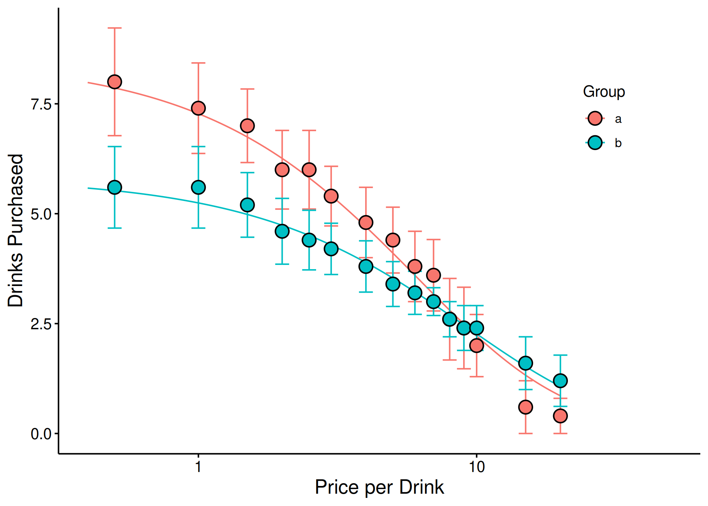

Group Comparisons with Extra Sum-of-Squares F-Test
Brent Kaplan
2026-02-24
Source:vignettes/group-comparisons.Rmd
group-comparisons.RmdIntroduction
When you have multiple groups (e.g., treatment vs. control, different populations), it is often useful to compare whether separate demand curves are preferred over a single curve. The Extra Sum-of-Squares F-test addresses this by fitting a single curve to all data, computing the residual deviations, and comparing those residuals to those obtained from separate group-level curves.
For background on fitting individual demand curves, see
vignette("beezdemand"). For mixed-effects approaches to
group comparisons, see vignette("mixed-demand").
Setting Up Groups
We will use the built-in apt dataset and manufacture
random groupings for demonstration purposes.
## setting the seed initializes the random number generator so results will be
## reproducible
set.seed(1234)
## manufacture random grouping
apt$group <- NA
apt[apt$id %in% sample(unique(apt$id), length(unique(apt$id))/2), "group"] <- "a"
apt$group[is.na(apt$group)] <- "b"
## take a look at what the new groupings look like in long form
knitr::kable(apt[1:20, ])| id | x | y | group |
|---|---|---|---|
| 19 | 0.0 | 10 | a |
| 19 | 0.5 | 10 | a |
| 19 | 1.0 | 10 | a |
| 19 | 1.5 | 8 | a |
| 19 | 2.0 | 8 | a |
| 19 | 2.5 | 8 | a |
| 19 | 3.0 | 7 | a |
| 19 | 4.0 | 7 | a |
| 19 | 5.0 | 7 | a |
| 19 | 6.0 | 6 | a |
| 19 | 7.0 | 6 | a |
| 19 | 8.0 | 5 | a |
| 19 | 9.0 | 5 | a |
| 19 | 10.0 | 4 | a |
| 19 | 15.0 | 3 | a |
| 19 | 20.0 | 2 | a |
| 30 | 0.0 | 3 | b |
| 30 | 0.5 | 3 | b |
| 30 | 1.0 | 3 | b |
| 30 | 1.5 | 3 | b |
Running the Extra Sum-of-Squares F-Test
The ExtraF() function will determine whether a single
\alpha or a single Q_0 is better than multiple \alphas or Q_0s. A resulting F statistic will
be reported along with a p value.
## in order for this to run, you will have had to run the code immediately
## preceeding (i.e., the code to generate the groups)
ef <- ExtraF(dat = apt, equation = "koff", k = 2, groupcol = "group", verbose = TRUE)A summary table (broken up here for ease of display) will be created
when the option verbose = TRUE. This table can be accessed
as the dfres object resulting from ExtraF. In
the example above, we can access this summary table using
ef$dfres:
| Group | Q0d | K | R2 | Alpha |
|---|---|---|---|---|
| Shared | NA | NA | NA | NA |
| a | 8.489634 | 2 | 0.6206444 | 0.0040198 |
| b | 5.848119 | 2 | 0.6206444 | 0.0040198 |
| Not Shared | NA | NA | NA | NA |
| a | 8.503442 | 2 | 0.6448801 | 0.0040518 |
| b | 5.822075 | 2 | 0.5242825 | 0.0039376 |
| Group | N | AbsSS | SdRes |
|---|---|---|---|
| Shared | NA | NA | NA |
| a | 160 | 387.0945 | 1.570213 |
| b | 160 | 387.0945 | 1.570213 |
| Not Shared | NA | NA | NA |
| a | 80 | 249.2764 | 1.787695 |
| b | 80 | 137.7440 | 1.328890 |
| Group | EV | Omaxd | Pmaxd |
|---|---|---|---|
| Shared | NA | NA | NA |
| a | 0.8795301 | 22.63159 | 8.453799 |
| b | 0.8795301 | 22.63159 | 12.272265 |
| Not Shared | NA | NA | NA |
| a | 0.8725741 | 22.45260 | 8.373320 |
| b | 0.8978945 | 23.10414 | 12.584550 |
| Group | Omaxa | Notes |
|---|---|---|
| Shared | NA | NA |
| a | 22.63190 | converged |
| b | 22.63190 | converged |
| Not Shared | NA | NA |
| a | 22.45291 | converged |
| b | 23.10445 | converged |
Visualizing Group Comparisons
When verbose = TRUE, objects from the result can be used
in subsequent graphing. The following code generates a plot of our two
groups. We can use the predicted values already generated from the
ExtraF function by accessing the newdat
object. In the example above, we can access these predicted values using
ef$newdat. Note that we keep the linear scaling of y given
we used Koffarnus et al. (2015)’s equation fitted to the data.
## be sure that you've loaded the tidyverse package (e.g., library(tidyverse))
ggplot(apt, aes(x = x, y = y, group = group)) +
## the predicted lines from the sum of squares f-test can be used in subsequent
## plots by calling data = ef$newdat
geom_line(aes(x = x, y = y, group = group, color = group),
data = ef$newdat[ef$newdat$x >= .1, ]) +
stat_summary(fun.data = mean_se, aes(width = .05, color = group),
geom = "errorbar") +
stat_summary(fun = mean, aes(fill = group), geom = "point", shape = 21,
color = "black", stroke = .75, size = 4) +
scale_x_log10(limits = c(.4, 50), breaks = c(.1, 1, 10, 100)) +
scale_color_discrete(name = "Group") +
scale_fill_discrete(name = "Group") +
labs(x = "Price per Drink", y = "Drinks Purchased") +
theme(legend.position = c(.85, .75)) +
## theme_apa is a beezdemand function used to change the theme in accordance
## with American Psychological Association style
theme_apa()
See Also
-
vignette("beezdemand")– Getting started with beezdemand -
vignette("model-selection")– Choosing the right model class for your data -
vignette("mixed-demand")– Mixed-effects nonlinear demand models (NLME)